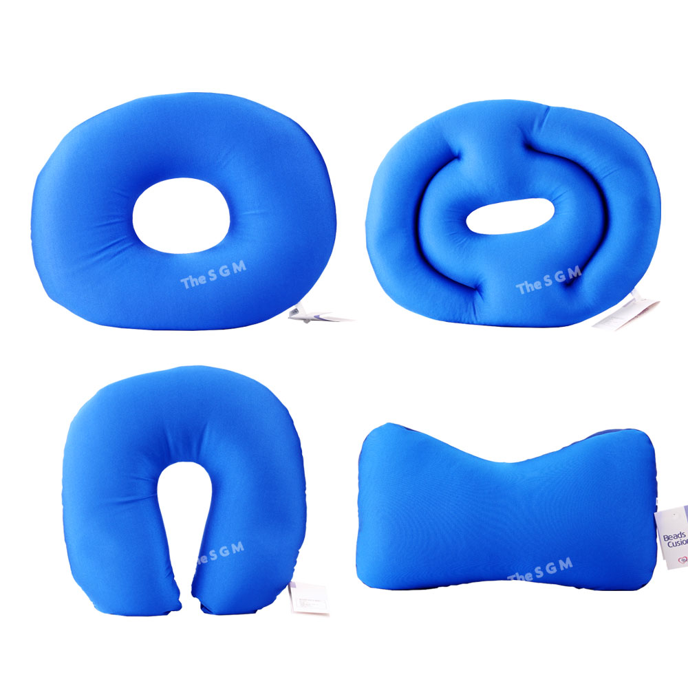
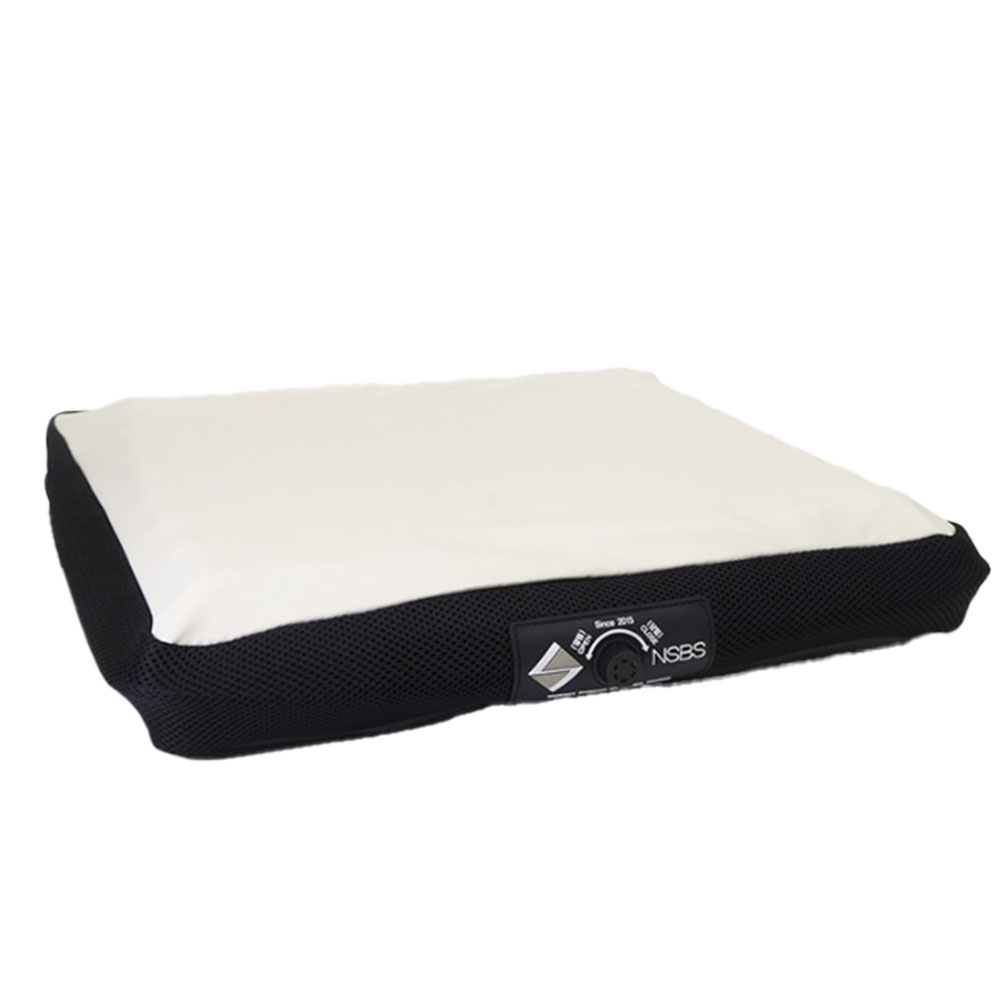
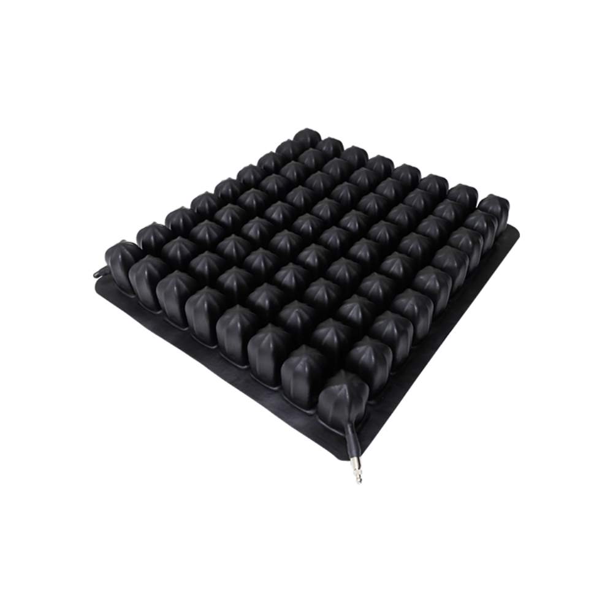

욕창예방 방석 추천 TOP 3 — 도넛·에어쿠션 비교
이 글에는 쿠팡 파트너스 활동의 일환으로 일정액의 수수료를 제공받는 링크가 포함되어 있습니다.
오래 앉아 계시거나 휠체어를 쓰는 어르신은 같은 부위에 압력이 집중돼 불편을 느끼기 쉽습니다. 체압을 분산하는 방석은 앉은 자세의 부담을 덜어줄 수 있습니다. 도넛형부터 에어셀 쿠션까지 정리했습니다.
먼저 확인하세요
이 글의 방석은 일상 보조용 생활용품이며 욕창을 치료하는 의료기기가 아닙니다. 욕창은 규칙적인 체위 변경과 피부 관찰이 기본이며, 이미 상처가 있거나 위험이 크면 반드시 의료진과 상담하세요.
추천 요양용품 TOP 3
가성비

가성비 도넛방석
비즈쿠션 도넛방석
6,800원 · 쿠팡 기준(변동 가능)
도넛형가성비가벼움
이런 분께 · 가볍게 앉은 부위 압박을 덜고 싶은 경우
- 저렴해서 부담 없이 사용
- 가운데가 뚫린 도넛형이라 특정 부위 압박을 줄임
참고 · 장시간·고위험군에는 에어셀 방석이 더 적합합니다.
쿠팡 최저가 확인하기 →베스트

복지용구 에어쿠션
나눔케어 욕창 방지 공기방석 에어쿠션 (복지용구)
41,700원 · 쿠팡 기준(변동 가능)
에어쿠션체압분산복지용구
이런 분께 · 매일 오래 앉아 계셔서 제대로 된 체압분산이 필요한 경우
- 공기 셀이 체압을 분산해 오래 앉아도 부담이 덜함
- 복지용구 계열이라 요양 현장에서도 많이 사용
참고 · 공기 주입·점검 등 관리가 필요합니다.
쿠팡 최저가 확인하기 →프리미엄

에어셀 체압분산
욕창예방방석 SJ-002 휠체어방석 에어셀 체압분산
238,000원 · 쿠팡 기준(변동 가능)
에어셀휠체어체압분산
이런 분께 · 휠체어를 장시간 사용하는 고위험 어르신
- 다중 에어셀로 체압분산 성능이 뛰어남
- 휠체어 사용자를 위한 전문 방석
참고 · 가격이 높아 대상·필요도를 신중히 판단하세요.
쿠팡 최저가 확인하기 →| 구분 | 가성비(도넛) | 베스트(에어쿠션) | 프리미엄(에어셀) |
|---|---|---|---|
| 방식 | 도넛형 쿠션 | 공기방석 | 다중 에어셀 |
| 체압분산 | 기본 | 좋음 | 매우 좋음 |
| 추천 | 가벼운 사용 | 오래 앉는 어르신 | 휠체어 고위험 |
| 가격대 | 6천원대 | 4만원대 | 20만원대 |
욕창 예방의 기본 — 방석만으로는 부족합니다
방석은 도움을 줄 뿐, 욕창 예방의 핵심은 규칙적인 체위 변경(보통 2시간마다)과 피부 관찰·청결·건조 유지입니다. 방석은 이를 보조하는 도구로 생각하세요. 붉은 자국이 오래 남거나 물집·상처가 보이면 지체 말고 의료진과 상담해야 합니다.
어떤 방석을 고를까
- 가볍게 압박만 덜고 싶다 → 도넛형(가성비)
- 매일 오래 앉아 계신다 → 공기방석(복지용구 계열)
- 휠체어 장시간·고위험 → 에어셀 전문 방석
- 장기요양등급이 있으면 복지용구 급여 대상 여부를 건강보험공단에 확인하세요.
욕창예방 방석이 욕창을 치료하나요?
아닙니다. 이 방석들은 앉은 자세의 압력을 분산해 부담을 덜어주는 보조 생활용품이며, 욕창을 치료하는 의료기기가 아닙니다. 이미 상처가 있거나 고위험이면 반드시 의료진의 진단·관리가 필요합니다.
도넛방석이 오히려 안 좋다는 말도 있던데요?
도넛형은 특정 부위 압박을 줄이지만, 주변부에 압력이 몰릴 수 있다는 견해도 있습니다. 장시간·고위험군은 체압을 고르게 분산하는 에어셀 방석이 더 권장됩니다. 상태에 맞게 고르고, 걱정되면 전문가와 상담하세요.
복지용구로 지원받을 수 있나요?
장기요양등급을 받은 어르신은 일부 욕창예방 방석이 복지용구 급여 대상이 될 수 있습니다. 대상 품목·한도는 국민건강보험공단 장기요양 상담으로 확인하는 것이 정확합니다.
정리
가성비 도넛방석(약 6,800원) · 베스트 공기방석(약 41,700원) · 프리미엄 에어셀 방석(약 238,000원). 방석은 보조 도구, 체위 변경이 기본입니다.